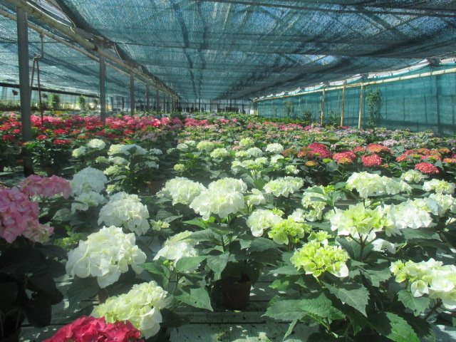
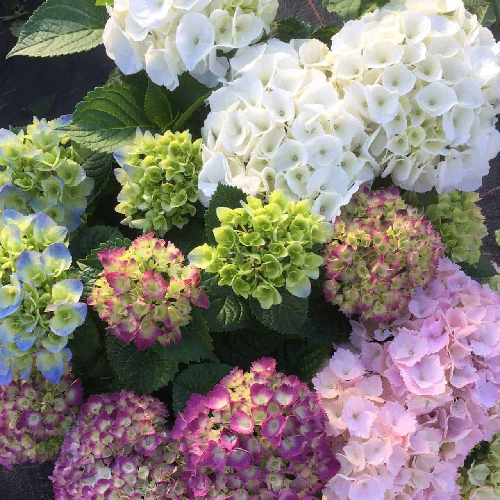
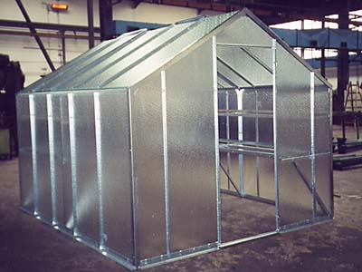

Hydrangea macrophylla
Magical Amethyst
Dynamické přechody z limetkové do sytě purpurové barvy. Ideální pro prémiový retail – nabízíme v C3 s pětinásobným květním pupenem.
Šlechtitelská stanice Hranice na Moravě
Navazujeme na tradici zahradnického výzkumu SEMPRY. Z německého programu Pellens vybíráme elitní kvetoucí kultivary, které v Hranicích pečlivě zakořeňujeme a připravujeme k expedici pro české zahradnictví.
V Hranicích na Moravě budujeme zázemí pro množení hortenzií od společnosti Pellens Hortensien. Kombinujeme pečlivý výběr matečných rostlin, moderní mlžení a udržitelnou výživu s využitím místní vody z Moravské brány.
Rostliny nabízíme ve třech velikostech kontejnerů (C2, C3 a C5) s garancí bohatého narašení. Ke každé dodávce přidáváme technologický list a doporučené termíny řezu. Disponujeme vyrovnanými šaržemi pro retail i pro velkoobjemové výsadby obcí.
Aktuální kolekce dostupná pro jarní a podzimní expedice 2025.
Licencované řízky Pellens jsou okamžitě po doručení očíslovány a nasazeny do inertního substrátu s perlitovou drenáží.
Řídíme zálivku mlhou na bázi reverzní osmotické vody, takže rostliny nepoznají stres a rychle vytvářejí silný kořen.
Dodávky balíme do prodyšných paletových boxů s QR štítky. Při převzetí získáte i digitální fotodokumentaci šarže.
Každou sezonu testujeme více než 25 odrůd Pellens Hortensien a do finální nabídky zařazujeme jen ty, které v podmínkách Moravské brány excelují.
Dynamické přechody z limetkové do sytě purpurové barvy. Ideální pro prémiový retail – nabízíme v C3 s pětinásobným květním pupenem.
Zářivě červené květy s voskovým povrchem drží barvu i na plném slunci. Doporučená pro veřejnou zeleň a reprezentativní nádoby.
Kompaktní růst, drobná ale hustá květenství. Skvělá na terasy, výborně snáší přepravu a brzké kvetení v květináči.
Panikulární hortenzie s krémovým začátkem a malinovým podzimem. V Hranicích ji nabízíme v C5 pro rychlé zapojení výsadeb.
Zahuštěná stavba lat, které od července tmavnou do vínova. Výborná volba pro alejové výsadby a zahradní architektky.
Miniaturní kultivar s pevnými stonky. Nabízíme jej pro prodejny hobby marketů i jako doplněk do městských parků v nádobách.
Zázemí v Hranicích tvoří 1 200 m² fóliovníků s inteligentním zastíněním a odděleným prostorem pro paniculaty a macrophylla typ.


Fotografie přímo z naší produkce v Hranicích na Moravě.
